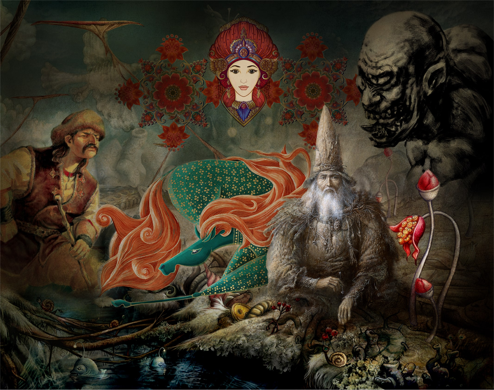

Dede Korkut, Oğuzların destan niteliğindeki hikâyelerini anlatan en önemli kişidir. Öyle ki bu eserlerin birçok bölümünde onun adına rastlanır ve günümüzde bu hikâyeler “Dede Korkut Hikâyeleri” adıyla bilinmektedir. Hikâyelerde adı bazen Dede Korkut olarak geçerken, kimi zaman “dede” ya da “ata” şeklinde de anılmaktadır. Oğuzların Kayı boyuna mensup olduğu düşünülen Dede Korkut’un soyunun İshak Peygamber’e dayandığı rivayet edilir. Ayrıca kaynaklarda, Dede Korkut’un soyundan gelenler arasında Osmanlı Devleti’nin kurucusu Osman Gazi’nin de bulunduğu ifade edilmektedir. Hikâyelere göre Dede Korkut, Türk toplumu için bilge bir şahsiyettir. Toplum yaşamından doğaya kadar pek çok konuda derin bir bilgiye sahip olduğu, gelenek ve görenekleri en ince ayrıntısına kadar bildiği anlatılır. Oğuz hükümdarlarına vezirlik yaptığı ve sahip olduğu bilgeliğiyle onlara danışmanlık ederek yol gösterdiği de rivayet edilmektedir. Söylentilere göre 295 yıl yaşadığı kabul edilen Dede Korkut’un, birçok döneme tanıklık ettiği söylenir. Türklerin Şamanizm inancından İslamiyet’i benimsediği sürece kadar yaşadığı düşünülen Dede Korkut’un, hayatının sonunda Müslüman olarak vefat ettiği anlatılmaktadır.
Destan ve hikâye özelliklerini birlikte taşıyan, sözlü gelenek içinde şekillenmiş zengin folklorik unsurlara sahip Dede Korkut Hikâyeleri, Türk kültüründe geleneklerin ve toplumsal hafızanın taşıyıcısı niteliğindedir. Bu anlatılar, ait oldukları toplumun kimliğini, değerler dünyasını ve millet olma bilincini destansı bir anlatımla yansıtmaktadır. Günlük yaşam, kahramanlık ve aşk temalarının iç içe geçtiği hikâyeler aracılığıyla Türk milletinin kültürel ve ahlaki yapısı kuşaktan kuşağa aktarılmıştır. Türk edebiyatında destandan hikâyeye geçişin ilk örnekleri arasında yer alan Dede Korkut Hikâyeleri, bu yönüyle kültür mirasımızın en önemli eserleri arasında kabul edilmektedir. Hikâyelerde Oğuz boylarının komşularıyla olan ilişkileri, aile ve toplum yapısı, devlet anlayışı, yiğitlik, kahramanlık ve aşk gibi pek çok tema işlenmiştir. Anlatıların merkezinde yiğitlik ve kahramanlık yer almakla birlikte, yalnızca beylerin değil halkın günlük yaşamı da ayrıntılı biçimde yansıtılmaktadır. Düğünler, eğlenceler, savaşlar, zaferler, yenilgiler ve toplumsal törenler aracılığıyla dönemin sosyal hayatına dair kapsamlı bir tablo sunulmakta; bu yönüyle hikâyeler, belirli kişilerin değil bütün Oğuz boyunun ortak yaşamını ve değerlerini anlatmaktadır. Hikâyelerde beyle halk arasında bir köprü görevi üstlenen Dede Korkut tipi ise bilgi, hikmet ve irfan sahibi bir bilge olarak karşımıza çıkmaktadır. Yaygın olarak “hikâye” olarak adlandırılmakla birlikte, metinlerde destan, hikâye ve masal unsurları iç içe yer almakta; eser bu yönüyle farklı anlatı türlerinin kaynaştığı güçlü bir kültürel birikimi temsil etmektedir.
